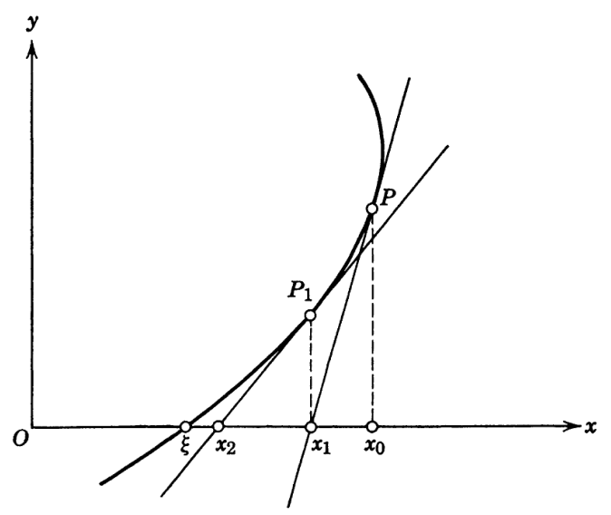
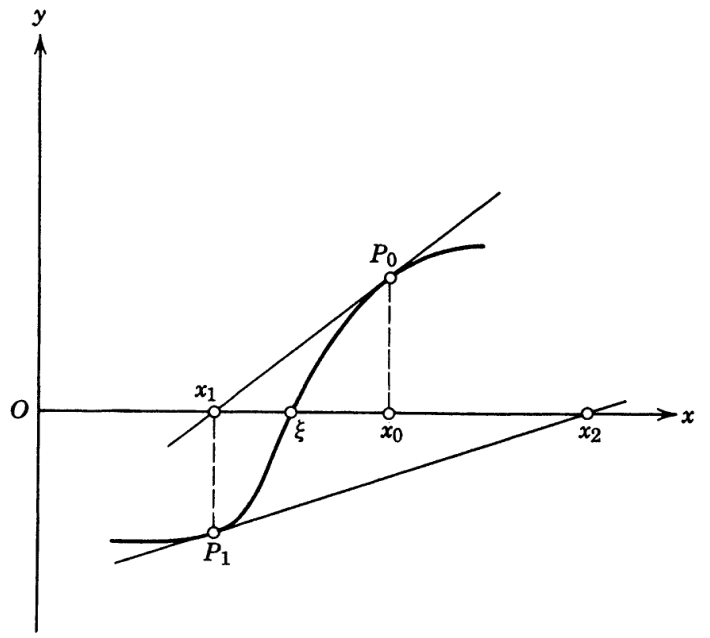
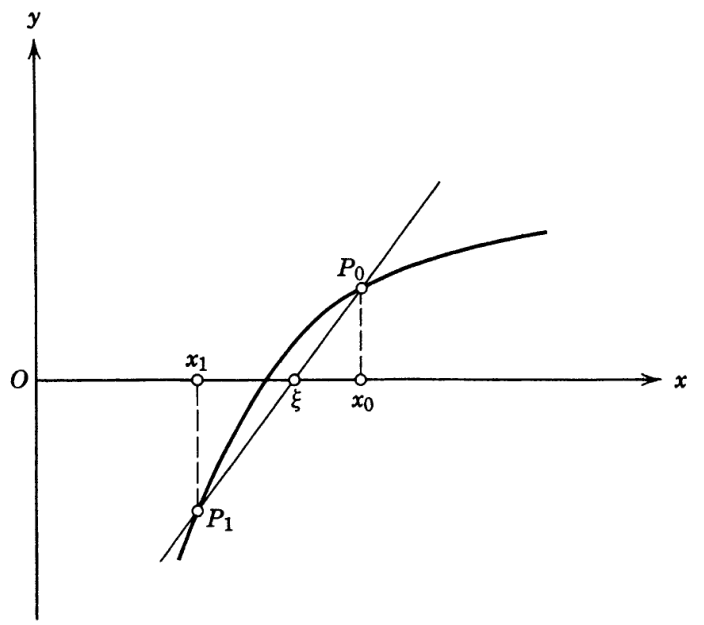
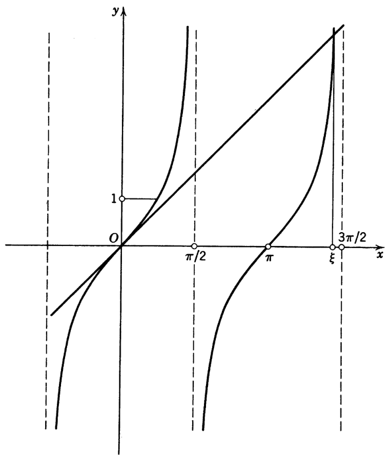

再说一说方程 f(x)=0 的数值解法，¹ 其中 f(x) 不必是多项式。先试着为一个根取初值 x0，然后改进这个近似。第一次近似怎样选、选得好不好，暂且不作规定。可以粗略猜一个数，更好的办法是从函数 y=f(x) 的图像上找一个初值，图像与 x 轴的交点便指出所求的根。
原注 1（第 494 页） 这里当然只考虑求 f(x)=0 的实根。
接着，设法找到一个过程或映射，把 x0 变成“第二次近似”，然后重复使用这个过程。数值求解 f(x)=0，就是反复作这样的逐次近似，也叫作“迭代”，期望各次所得的值 x1,x2,…,xn 能够顺利地收敛到根 ξ。下面来看几种这样的方法，并简要讨论它们的精度。
a. 牛顿法
方法的说明
牛顿迭代法建立在微分学的基本原理上，即在切点的近邻用切线代替曲线。设 x0 是方程 f(x)=0 的一个根 ξ 的初步近似值。取函数 y=f(x) 的图像上坐标为 x=x0、y=f(x0) 的点。要更准确地逼近曲线与 x 轴的交点 ξ，我们在点 (x0,f(x0)) 作切线，求出它与 x 轴的交点 x1。这个交点的横坐标 x1 就是所求根 ξ 的一个新近似值，在一定条件下比 x0 更好。
从图 6.4 立刻得到
x0−x1f(x0)=f′(x0),故新的近似值为
x1=x0−f′(x0)f(x0).(10)再从 x1 出发，重复这个过程，求得 x2=x1−f(x1)/f′(x1)，如此继续下去。

图 6.4 牛顿近似法
这个方法能否奏效，根本上取决于曲线 y=f(x) 的性质。在图 6.4 所示的情形，逐次近似值 xn 越来越准确地逼近所求的根 ξ。可是图 6.5 表明，即使初值 x0 看起来选得合情合理，这个作图过程也完全可能不趋向所求的根。因此，有必要一般地考察，究竟在什么条件下牛顿法能为方程的解提供有用的近似。

图 6.5 切线与横轴的交点也可能越来越远
牛顿法的二次收敛
设在根 ξ 周围一个足够宽的区间上，二阶导数 f′′(x) 不“太大”，一阶导数 f′(x) 不“太小”。在这个假设下，牛顿近似法最重要的性质是，逐次的“误差”
h1=ξ−x1,h2=ξ−x2,…,hn=ξ−xn,…二次收敛于零。这句话的意思是，对某个固定常数 μ，有 ∣hn+1∣≤μhn2。这表示收敛极快。例如，把不等式写成 ∣hn+1μ∣≤∣hnμ∣2，就看出：当 ∣hnμ∣<10−m 时，有 ∣hn+1μ∣<10−2m。换句话说，μxn 中准确的“有效数字”位数每一步都翻一番。
二次收敛性的证明很直接。由 xn+1=xn−f(xn)/f′(xn) 和 f(ξ)=0，得到
hn+1=ξ−xn+1=ξ−xn−f′(xn)f(ξ)−f(xn).根据泰勒公式，
f(ξ)−f(xn)=(ξ−xn)f′(xn)+21(ξ−xn)2f′′(η),其中 η 介于 ξ 与 xn 之间。故
hn+1=−2f′(xn)f′′(η)hn2.(11)为证明收敛，设 xn 已落在固定区间 ξ−δ<x<ξ+δ 内，其中 ∣f′′∣ 有最大值 M2，∣f′∣ 有正的最小值 m1，而 δ 足够小，使 21δM2/m1<1。置 μ=21M2/m1，则 μδ<1，并有
∣hn+1∣≤μ∣hn∣2≤μδ∣hn∣<∣hn∣.这个不等式首先说明，xn+1 仍在 ξ 的同一个 δ 邻域里，从而可以反复使用这一论证。只要 x0 落在 ξ 的 δ 邻域内，以后一切 xn 就都在其中。由 ∣hn+1∣≤μδ∣hn∣ 进而得到 ∣hn+1∣≤(μδ)n+1∣h0∣，故 hn→0，也就是 xn→ξ。此外，误差还遵循二次递减规律 ∣hn+1∣≤μ∣hn∣2。
现在可以明确地说，只要 f′ 和 f′′ 在 ξ 附近存在且连续，f′(ξ)=0，而且 x0 一开始就足够靠近 ξ，牛顿法产生的数列 xn 一定会收敛到解 ξ。这种二次收敛的性质常使牛顿法比其他方法明显优越（见第 503 页）。
*b. 试位法
牛顿法是一种更古老的方法——“试位法”——的极限情形。在试位法中，所用的是割线。假设已知曲线上两个点 (x0,y0) 和 (x1,y1)，都在所求的曲线与 x 轴的交点附近。用过这两点的割线代替曲线，这条割线与 x 轴的交点便可能给出方程的根的一个更好近似。¹ 这个交点的横坐标 ξ 满足（图 6.6）
f(x0)ξ−x0=f(x1)ξ−x1,(12)从而
ξ=f(x1)−f(x0)x0f(x1)−x1f(x0)=f(x1)−f(x0)x0f(x1)−x0f(x0)+x0f(x0)−x1f(x0),即
ξ=x0−x1−x0f(x1)−f(x0)f(x0).(13)原注 1（第 498 页） 这实际上相当于对反函数作线性插值。

图 6.6 试位法
这个公式从 x0 和 x1 得到下一个近似值 ξ，这就是试位法。当所取的两个函数值一正一负时，它很有用，如图 6.6 中的 y0>0、y1<0。
令 x1→x0 便得到极限情形，即牛顿近似公式。因为当 x1 趋于 x0 时，式 (13) 右端第二项的分母趋于 f′(x0)。试位法虽然可以说比牛顿法更初等，但牛顿法只需选取一个 x 值作为初始近似，而试位法要取两个，这是牛顿法的一大便利。
c. 迭代法
迭代格式
现在转向一种用途很广的解方程方法，把方程写成
x=ϕ(x),其中 ϕ 是具有连续导数的连续函数。对于形如 f(x)=0 的方程，只要置 ϕ(x)=x−c(x)f(x)，就可归结为求解 x=ϕ(x)，这里 c(x) 是任意一个处处非零的函数。
在这一颇富启发性的迭代法中，¹ 仍旧先选取一个合适的近似初值 x0，然后按照条件
xn+1=ϕ(xn),n=0,1,2,…确定一列值 x1,x2,x3,…。若这一“迭代”数列 xn 收敛到极限 ξ，那么 ξ=ϕ(ξ)，即 ξ 是方程的解。因为这时 limn→∞xn+1=ξ，而由 ϕ 的连续性，limn→∞ϕ(xn)=ϕ(ξ)。
原注 1（第 499 页） 有时也叫逐次近似法。在许多不同的数学问题中都用这种方法求解各种形式的方程。
收敛性
在一个很一般的假设下，迭代过程所产生的数列 xn 收敛到一个解：设初始近似值 x0 位于解 ξ 周围的区间 J 内，² 在这个区间上有
∣ϕ′(x)∣<q,其中 q<1 为常数，则 xn 收敛到 ξ。
原注 2（第 499 页） 尽管 ξ 未知，我们却常常可以预先确定这样的区间。
事实上，设 x0 属于 J，则 x1−ξ=ϕ(x0)−ϕ(ξ)。由中值定理，右端等于 (x0−ξ)ϕ′(xˉ)，其中 xˉ 在 J 内。故根据假设，
∣x1−ξ∣≤q∣x0−ξ∣.这样 x1 仍属于 J，从而还有
∣x2−ξ∣≤q∣x1−ξ∣≤q2∣x0−ξ∣.一般地，得到
∣xn−ξ∣≤qn∣x0−ξ∣.当 n→∞ 时 qn→0，结论得证。由以上推导还可以看出，如果 ξ 的某个邻域内有 ϕ′(x)>1，则迭代数列通常不会趋于该点；若 ∣ϕ′(ξ)∣=1，便不能作一般的断言。
译者注 证明中“x1 仍属于 J”用到了邻域的选法。可以把 J 取得关于 ξ 对称，这样到 ξ 的距离既然缩短，新的点就仍在 J 内。若用任意不对称区间，则还需保证迭代后的点不会跑出这个区间。
吸引不动点与排斥不动点
从映射或变换的角度看迭代过程很有帮助。函数 y=ϕ(x) 代表一个变换，把数轴上的点 x 映到同一数轴上的像点 y（见第 20 页）。解 ξ 是一个经过 ϕ 变换后仍保持原位的点，即所谓不动点。所以问题就是求映射的不动点。我们已经看到，若 ∣ϕ′(ξ)∣≤q<1，便可通过迭代求得。
当根或不动点 ξ 的邻域内满足 ∣ϕ′(x)∣<q<1 时，映射 y=ϕ(x) 具有压缩性，也就是说，像点比原来的点更靠近不动点。这种压缩映射的不动点叫作吸引不动点。用迭代来构造它，误差像公比为 q 的几何级数的各项那样收敛。
如果根 ξ，即相应变换的不动点，落在一个满足 ∣ϕ′(x)∣>r 的区间里，其中常数 r>1，那么这个变换是扩张的，迭代过程发散，这个不动点称为排斥不动点。
如果不动点处有 ∣ϕ′(ξ)∣=1，就不能对迭代的收敛性作一般的断言。这种不动点有时称为中性不动点。
还有一件事值得强调：映射 ϕ 的不动点 ξ 自然也是逆映射 ψ 的不动点，即 ξ=ψ(ξ)。若在根 ξ 附近原映射的导数绝对值大于一，∣ϕ′(ξ)∣>1，而 x=ψ(y) 是 ϕ 的反函数，则 ∣ψ′(ξ)∣<1。因此 ξ 对逆映射是吸引不动点。这样，原来发散的迭代格式，就可以换成逆映射的收敛迭代格式。
例如考虑方程 x=tanx。从 y=x 与 y=tanx 的图像可以清楚看出，两者在区间 π<x<23π 的某处相交，所以方程在这个区间内有一个根 ξ（图 6.7）。由于
dxdtanx=cos2x1>1,从区间内任取一个普通初值 x0 出发，正向迭代不能趋近这个根。然而，把方程改写成逆函数的形式（arctanx 表示主支）
x=arctanx+π,便能得到一个收敛的迭代数列。因为这里
dxdarctanx=1+x21<1,所以取 xn+1=arctanxn+π，再取例如 x0=π，所得数列就收敛到 ξ。

图 6.7 曲线 y = tan x 与 y = x 的交点 (ξ, ξ)
d. 迭代与牛顿法
前面已经说过，给定方程 f(x)=0，只要取
ϕ(x)=x−c(x)f(x),其中 c(x) 处处不为零，就可以把问题归结为求 x=ϕ(x) 的解。如果想用迭代法解后一个方程，就必须适当选择 c(x)，使得映射 ϕ 的不动点 ξ 具有吸引性，即 ∣ϕ′(ξ)∣<1。对于满足 f(ξ)=0 的解 ξ，有
ϕ′(ξ)=1−c′(ξ)f(ξ)−c(ξ)f′(ξ)=1−c(ξ)f′(ξ).最简单的选择，是让 c(x) 等于 1/f′(x)。这时必有 ∣ϕ′(ξ)∣=0<1。这样选取 c(x)，产生的迭代数列为
xn+1=ϕ(xn)=xn−f′(xn)f(xn),恰好就是牛顿法中的逐次近似式 (10)（第 495 页）。对于误差 xn−ξ=hn，有估计
∣hn+1∣=∣ϕ(xn)−ϕ(ξ)∣≤qhn,其中 q 是 ∣ϕ′(x)∣ 在以 ξ 和 xn 为端点的区间上的最大值。由于这里
ϕ′(x)=f′2(x)f(x)f′′(x)且 f(x)=f(x)−f(ξ)=f′(η)(x−ξ)，可见 q 本身就是 hn 阶的量，从而再次证实了牛顿近似法的二次收敛性。
译者注 原书在不等式右端写作 qhn。这里 hn=xn−ξ 是带符号的误差，一般应写成 q∣hn∣；而 q 本身又至多是 ∣hn∣ 的常数倍，所以右端是二阶小量。
另一种简单的选择，是把 c(x) 固定为常数 1/f′(x0)。这样得到的递推公式为
xn+1=ϕ(xn)=xn−f′(x0)f(xn).这里 ϕ′(ξ)=1−f′(ξ)/f′(x0)。若 f′ 连续且不为零，只要最初的近似值 x0 已足够靠近解 ξ，使
∣ϕ′(ξ)∣=∣f′(x0)∣∣f′(x0)−f′(ξ)∣<1,就有一个吸引不动点 ξ。这套迭代格式比牛顿法稍简便，收敛却慢得多，像几何数列那样，这也是多数迭代格式的情形。
例
先考虑三次方程
f(x)=x3−2x−5=0.由于 f(2)=−1<0、f(3)=16>0，区间 2<x<3 中一定有根 ξ。又因 f′(x)=3x2−2>3(2)2−2>0，区间内只有这一个根。用牛顿法，从近似值 x0=2 出发，依次得到
x1x2=x0−f′(x0)f(x0)=2−3(2)2−2−1=2.1,f(x1)=0.061,=x1−f′(x1)f(x1)=2.1−3(2.1)2−20.061=2.094568.因 f(2.1)>0、f(2)<0，根 ξ 介于 2 与 2.1 之间。在区间 1.9<x<2.2 上，当然也就在区间 ξ−0.1<x<ξ+0.1 上，有下列估计
∣f′′(x)∣=∣6x∣<6(2.2)=13.2,f′(x)=3x2−2>3(1.9)2−2=8.83.据此，从第 497 页式 (11) 得到
∣ξ−xn+1∣≤2(10.83)13.2∣xn−ξ∣2<0.75∣xn−ξ∣2,条件是 ∣xn−ξ∣<0.1。由于 ∣x0−ξ∣=∣ξ−2∣<0.1，依次得到
∣x1−ξ∣∣x2−ξ∣<(0.75)(0.1)2=0.0061,<(0.61)(0.0061)2<0.000042.若精度还不够，则进一步求近似值 x3，其误差 <(0.75)(0.000042)2<0.0000000013。
译者注 上面保留了原书连续几行的数字，其中有几处算术不一致。由前一行的下界，分母应为 2(8.83)，故系数小于 0.75。一致地使用这个较宽的界，三步的误差依次小于 0.0075、0.0000421875、1.335×10−9。二次收敛的结论不变。
x0 以后的一切 xn 必定大于 ξ。这从 f′ 和 f′′ 都为正就看得出来，因为由此有
hn+1=−f′′(η)hn2/2f′(xn)<0.若改用试位法（第 498 页式 (13)），从 x0,x1 出发，过 (x0,f(x0)) 和 (x1,f(x1)) 的割线与 x 轴的交点横坐标为
ξ=x0−f(x1)−f(x0)f(x0)(x1−x0)=2.09425….因为曲线在所考虑的区间内是凸的，割线位于曲线上方，所以这个近似值 ξ 小于真正的根。（原书对此近似值和真根沿用了同一个符号 ξ。）
第二个例子是求解方程
f(x)=xlog10x−2=0.f(3)=−0.6、f(4)=+0.4（取近似值），所以选 x0=3.5 为初始近似值。使用十位对数表，依次算得
x0x2=3.5,=3.5972849,x1x3=3.598,=3.5972850235.